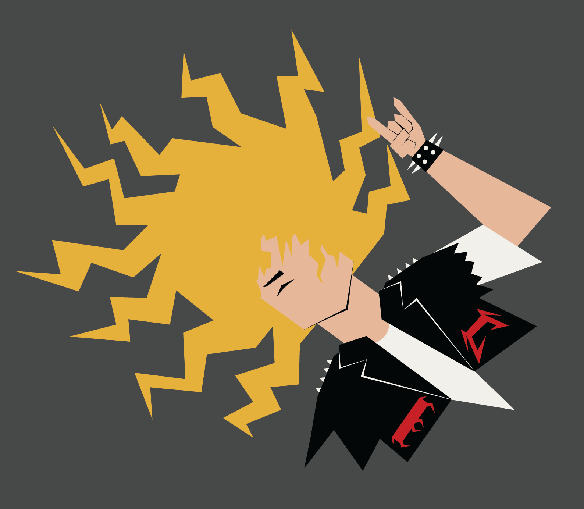
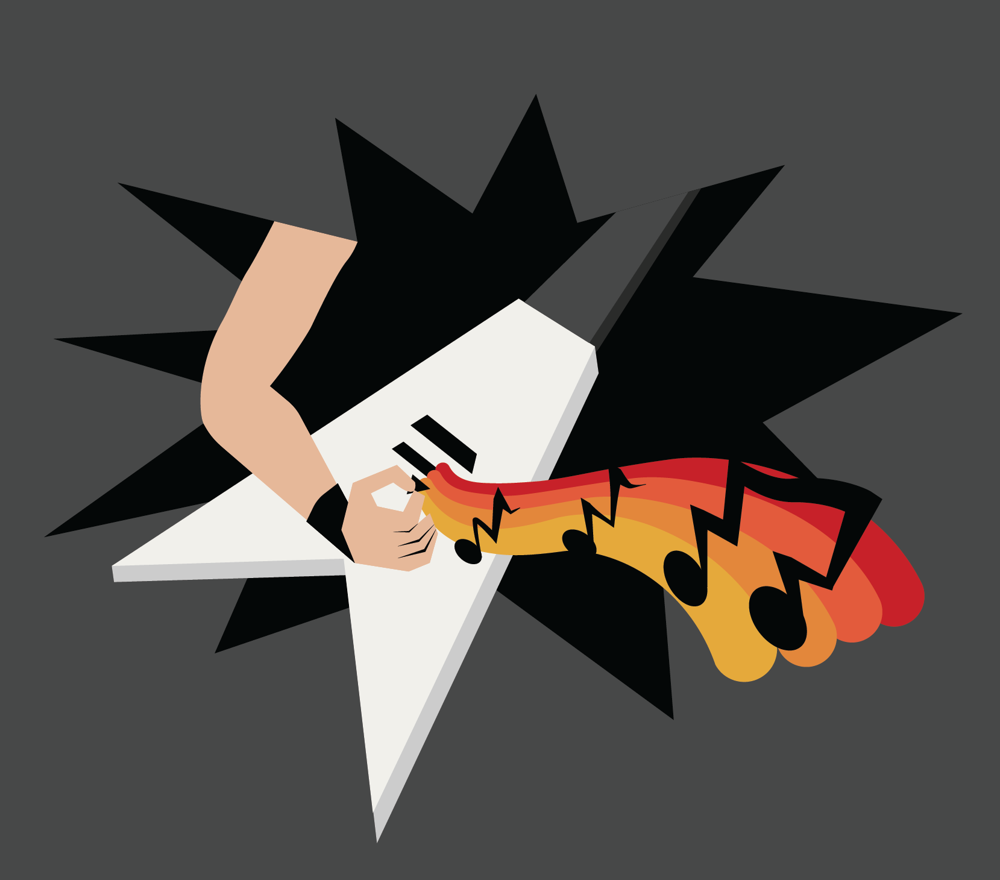
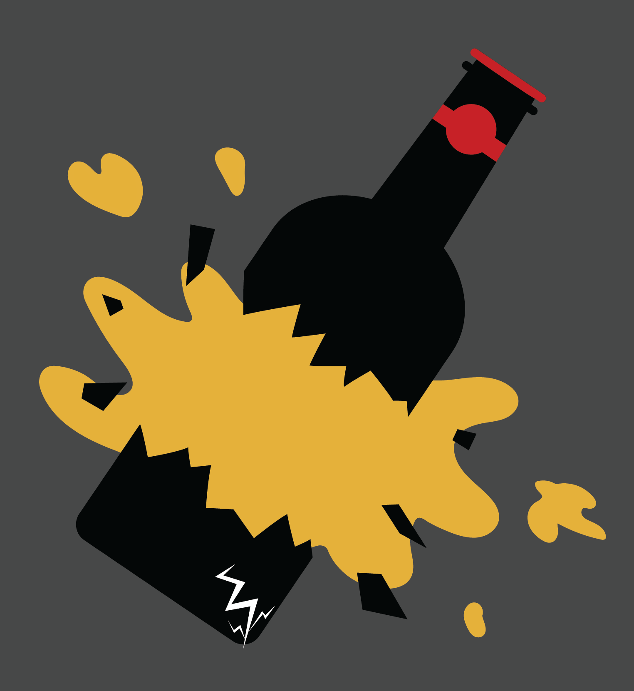
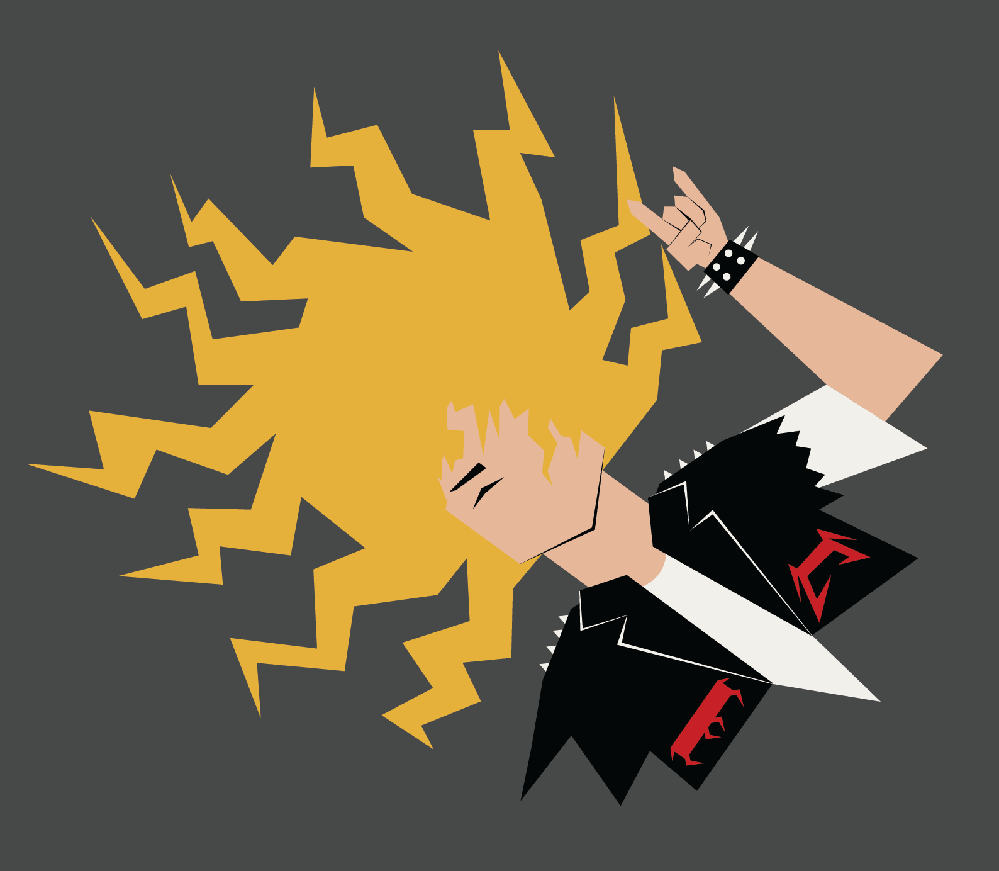
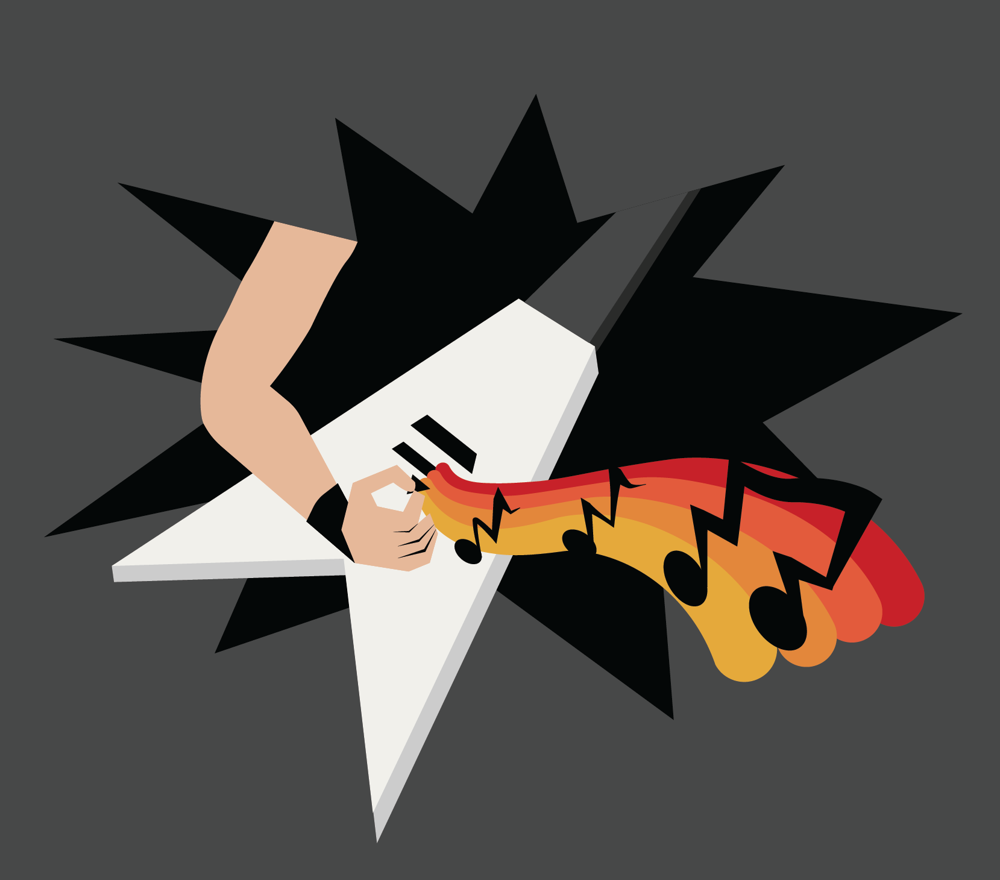
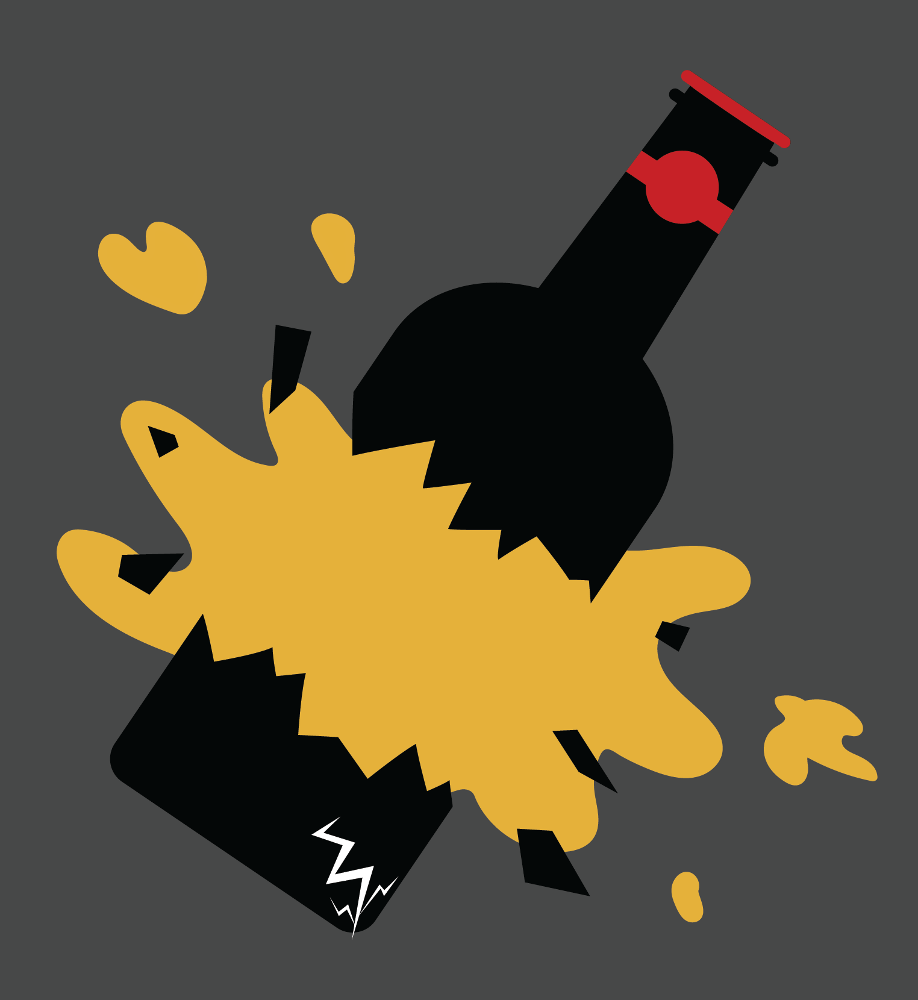
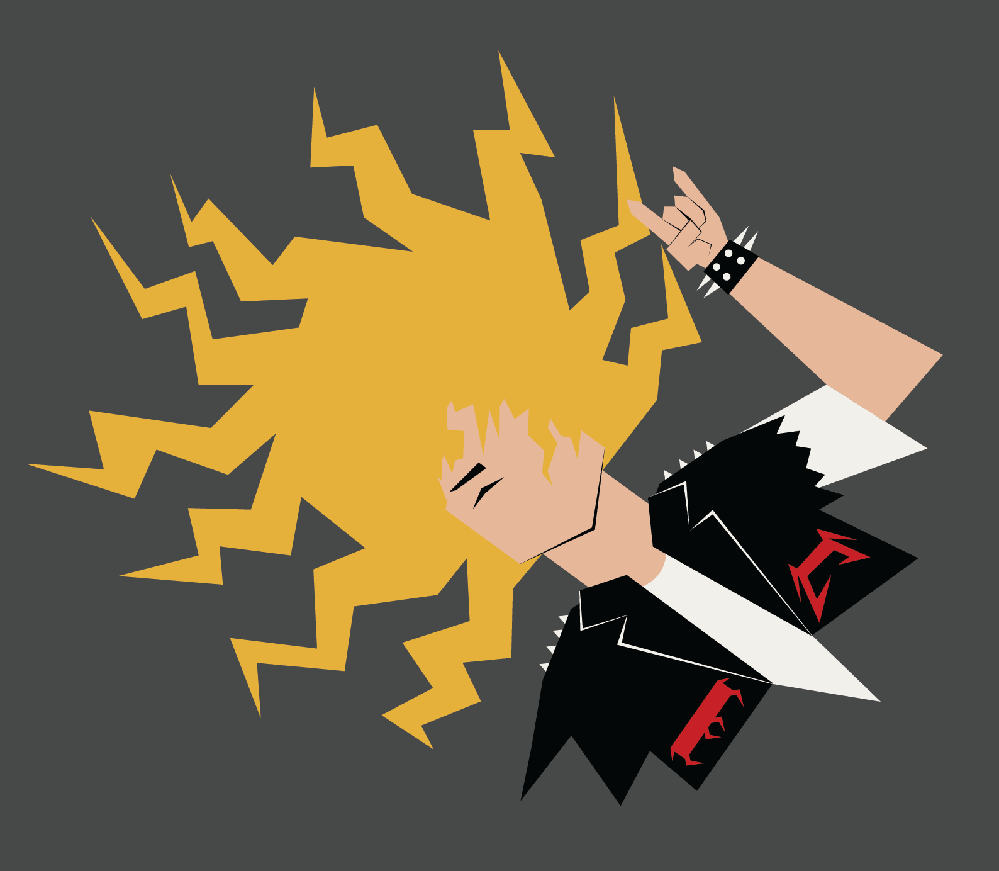
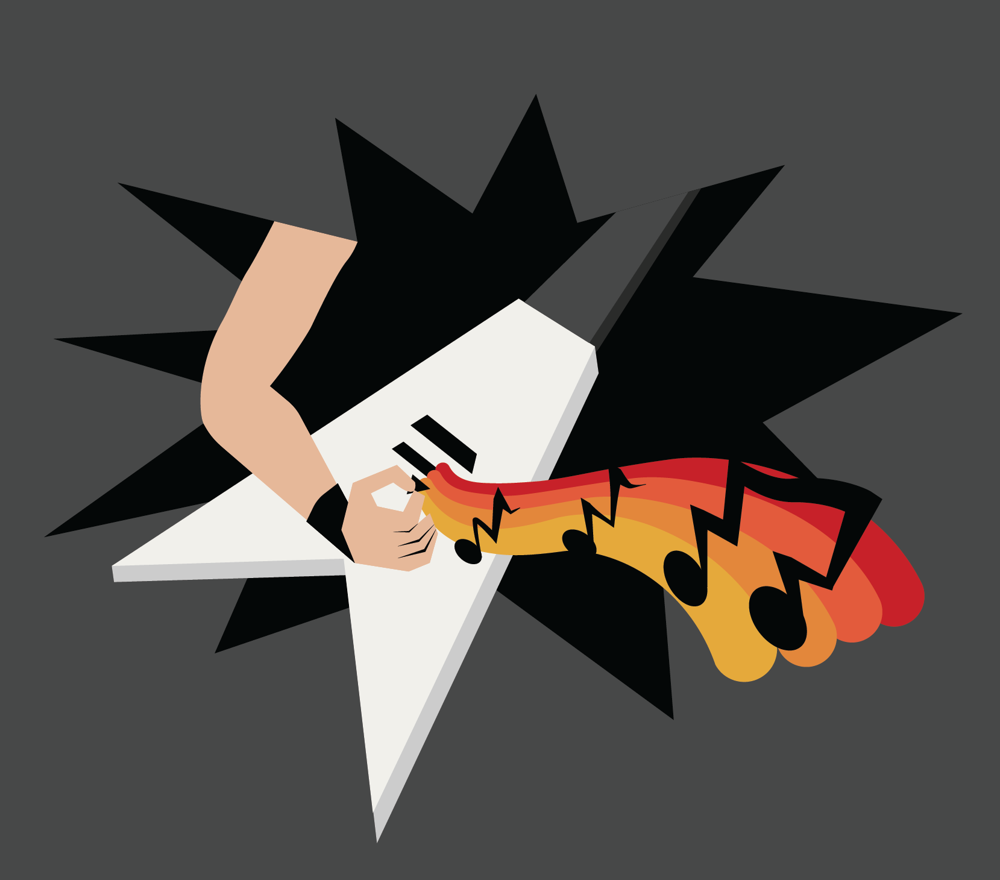
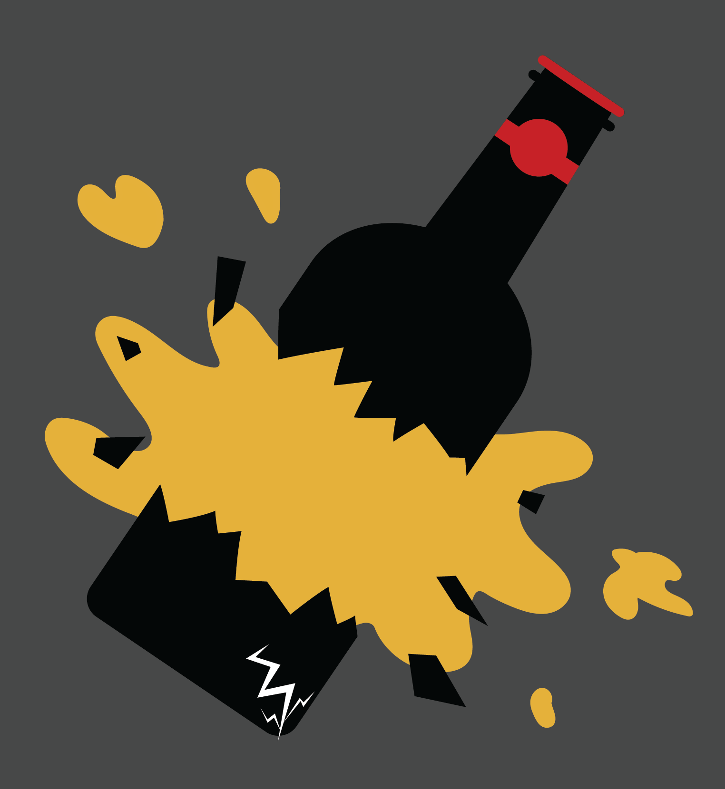

This is a digital poster consisting of three icons meant to represent the 80s metal scene in the San Francisco Bay Area. The first icon represents metal fashion, depicting long hair, a patch-decorated jacket, and a spiked bracelet. The second represents the music itself, with an arm playing a white V-shaped guitar with distorted notes coming out of it. The third represents the party culture, depicting a smashed beer bottle. The overall series shows the abrasive, loud, and anti-conforming culture of metal. Designed in Illustrator.


